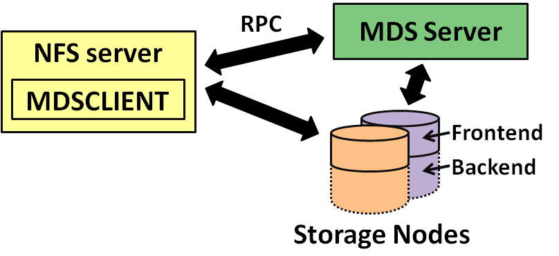

Guide
Click
"next task"
to go to the next graph
Select a
mode
(side-by-side/diff/animation)
Pan by dragging, zoom with the mouse wheel
move
Σ(selected) =
(not in select mode)
Side-by-Side
Diff
Animation
before
after
start
IOzone
Prefetch 10
Prefetch 50
MDS Config
mdsconfig
Hadoop
Hadoop Cmp
1ms Spin
10us Spin
500us Spin
Task 1
Task 2
Task 3
Task 4
Task 5
Training
Before
After
Developer
Next Task
Evaluate answers for:
Go

OK
FP
FN
Mark
Statistically Significant
Latency Change
Structural Change
Most Impact
Un-mark
What Changes Represent
Interesting/Problematic